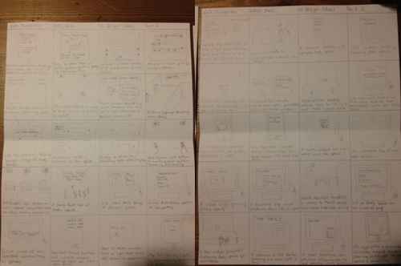

Now that we understood the problem we were solving a little better, we set about brainstorming ideas that could address that problem. Again, for maximum benefit, we split up and brainstormed 40 ideas each.
What follows is a copy of my 40 ideas:
When we reconvened, we each shared what we considered to be our best ideas, and debated the merits of each. Again, there was a little bit of tiptoeing around, but for the most part this discussion dispelled this barrier forevermore. In fact, the discussion probably significantly more tension than what was helpful because we were all asked to let go of our ideas. I was pretty invested in all 40 of my ideas, because it had taken me a long time to think of them all. However, when the pitfalls of some of my ideas were pointed out to me, it became clear to me that this was not a healthy attitude to have about my designs. In the future, I think it will be easier for me to disassociate myself with my ideas, because I realize that I have to have the final design's best interest at heart, not my own.
We collectively decided that there were two ideas that would address the problem in a satisfactory manner:
Because we could not seem to make headway in debating which of these solutions was more suitable, we decided to proceed with both of them until we gathered sufficient information on user's opinions of each.